1 Τραπέζια
1.1 Τραπέζιο
1.1.1 Ορισμοί
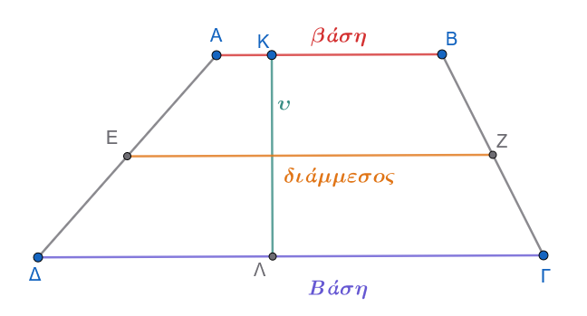
Τραπέζιο λέγεται το κυρτό τετράπλευρο που έχει μόνο δύο πλευρές παράλληλες.
Οι παράλληλες πλευρές \(AB\) και \(\Gamma\Delta\) ονομάζονται βάσεις του τραπεζίου.
Κάθε ευθύγραμμο τμήμα κάθετο στις βάσεις με τα άκρα του στους φορείς τους λέγεται ύψος του τραπεζίου.
Το ευθύγραμμο τμήμα \(EZ\) που ενώνει τα μέσα των μη παράλληλων πλευρών του λέγεται διάμεσος του τραπεζίου.
1.1.2 Θεώρημα και πόρισμα
Θεώρημα (Διάμεσος Τραπεζίου)
Η διάμεσος τραπεζίου είναι παράλληλη προς τις βάσεις και ίση με το ημιάθροισμά τους. \[EZ \parallel AB, \quad EZ \parallel \Gamma\Delta \quad \text{και} \quad EZ = \dfrac{AB + \Gamma\Delta}{2}\quad\]
Απόδειξη:
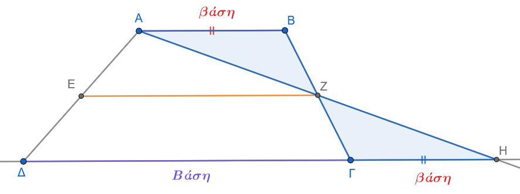
Έστω τραπέζιο \(AB\Gamma\Delta\) (\(AB \parallel \Gamma\Delta\)) και \(E, Z\) τα μέσα των μη παράλληλων πλευρών \(A\Delta\) και \(B\Gamma\) αντίστοιχα. Ενώνουμε τα σημεία \(A, Z\) και προεκτείνουμε το τμήμα \(AZ\) μέχρι να τέμνει την προέκταση της βάσης \(\Delta\Gamma\) στο σημείο \(H\).
Συγκρίνουμε τα τρίγωνα \(ABZ\) και \(H\Gamma Z\):
\(BZ = Z\Gamma\), διότι το \(Z\) είναι το μέσο της \(B\Gamma\).
\(A\widehat{Z}B = H\widehat{Z}\Gamma\), ως κατακορυφήν γωνίες.
\(A\widehat{B}Z = H\widehat{\Gamma}Z\), ως εντός εναλλάξ γωνίες των παραλλήλων \(AB\) και \(\Delta H\) που τέμνονται από τη \(B\Gamma\).
Σύμφωνα με το κριτήριο ισότητας τριγώνων Γ-Π-Γ, τα τρίγωνα \(ABZ\) και \(H\Gamma Z\) είναι ίσα. Από την ισότητα αυτή προκύπτει ότι:
\(AZ = ZH\), δηλαδή το \(Z\) είναι το μέσο του ευθύγραμμου τμήματος \(AH\).
\(AB = \Gamma H\).
Στο τρίγωνο \(A\Delta H\), το τμήμα \(EZ\) συνδέει τα μέσα των πλευρών \(A\Delta\) (\(E\) μέσο) και \(AH\) (\(Z\) μέσο). Από το θεώρημα της διαμέσου τριγώνου, το \(EZ\) είναι παράλληλο προς την τρίτη πλευρά \(\Delta H\) και ίσο με το μισό της: \[EZ \parallel \Delta H \Rightarrow EZ \parallel AB \quad \text{και} \quad EZ \parallel \Gamma\Delta\quad\] \[EZ = \dfrac{\Delta H}{2} = \dfrac{\Delta\Gamma + \Gamma H}{2} = \dfrac{AB + \Gamma\Delta}{2}\quad\]
Πόρισμα
Η διάμεσος \(EZ\) τραπεζίου \(AB\Gamma\Delta\) διέρχεται από τα μέσα \(Η\) και \(Θ\) των διαγωνίων του \(B\Delta\) και \(A\Gamma\) αντίστοιχα, και το ευθύγραμμο τμήμα \(ΗΘ\) είναι παράλληλο προς τις βάσεις και ίσο με την ημιδιαφορά των βάσεων: \[ΗΘ \parallel AB, \Gamma\Delta \quad \text{και} \quad ΗΘ = \dfrac{\Gamma\Delta - AB}{2} \quad (\text{με } \Gamma\Delta > AB) \quad\]
Απόδειξη:
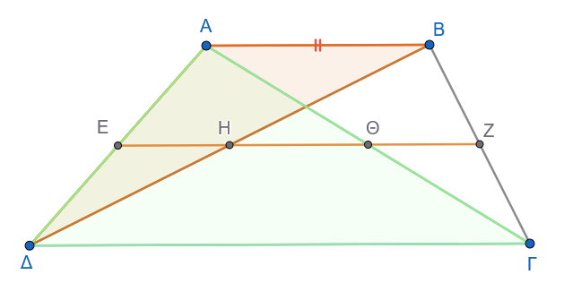
Στο τρίγωνο \(A\Delta B\), το \(E\) είναι το μέσο της \(A\Delta\) και ισχύει \(EΗ \parallel AB\) (αφού το \(Η\) ανήκει στη διάμεσο \(EZ \parallel AB\)). Συνεπώς, η ευθεία \(EΗ\) διέρχεται από το μέσο της πλευράς \(B\Delta\), δηλαδή το \(Η\) είναι το μέσο της διαγωνίου \(B\Delta\) και ισχύει: \[EΗ = \dfrac{AB}{2}\quad (1)\quad\] Όμοια, στο τρίγωνο \(A\Delta\Gamma\), το \(Ε\) είναι μέσο της \(A\Delta\) και \(EΘ \parallel \Gamma\Delta\), οπότε το \(Θ\) είναι το μέσο της διαγωνίου \(A\Gamma\) και ισχύει: \[EΘ = \dfrac{\Gamma\Delta}{2}\quad (2)\quad\] Επειδή τα σημεία \(E, Η, Θ, Z\) είναι συνευθειακά (ανήκουν όλα στη διάμεσο \(EZ\)), το μήκος του τμήματος \(ΗΘ\) ισούται με: \[ΗΘ = EΘ - EΗ = \dfrac{\Gamma\Delta}{2} - \dfrac{AB}{2} = \dfrac{\Gamma\Delta - AB}{2}\quad\]
1.1.3 Εφαρμογές
- Εφαρμογή 1η:
Δίνεται τραπέζιο \(AB\Gamma\Delta\) (\(AB \parallel \Gamma\Delta\)) και η διάμεσός του \(EZ\).
Αν οι μη παράλληλες πλευρές \(A\Delta\) και \(B\Gamma\) τέμνονται στο σημείο \(K\), και \(H, \Theta\) είναι τα μέσα των τμημάτων \(KA\) και \(KB\) αντίστοιχα, να αποδειχθεί ότι το τετράπλευρο \(EZ\Theta H\) είναι τραπέζιο.
Λύση:
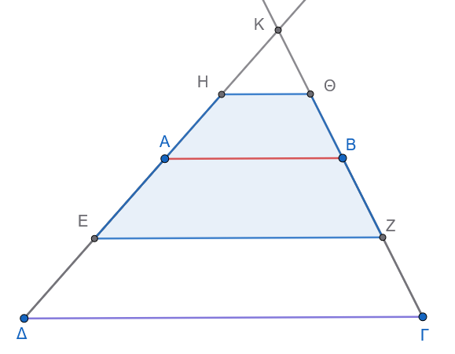
Στο τρίγωνο \(KAB\), τα σημεία \(H\) και \(\Theta\) είναι τα μέσα των πλευρών \(KA\) και \(KB\), οπότε το ευθύγραμμο τμήμα \(H\Theta\) συνδέει τα μέσα των πλευρών του και ισχύει \(H\Theta \parallel AB\).
Επειδή το \(EZ\) είναι η διάμεσος του τραπεζίου \(AB\Gamma\Delta\), ισχύει επίσης \(EZ \parallel AB\).
Συνεπώς \(H\Theta \parallel EZ\).
Επειδή \(H\Theta \neq EZ\) (καθώς \(H\Theta = \dfrac{AB}{2}\) ενώ \(EZ = \dfrac{AB+\Gamma\Delta}{2}\)), το τετράπλευρο \(EZ\Theta H\) έχει μόνο δύο πλευρές παράλληλες, άρα είναι τραπέζιο.
- Εφαρμογή 2η:
Σε τραπέζιο \(AB\Gamma\Delta\) (\(AB \parallel \Gamma\Delta\)) η μεγάλη βάση είναι τριπλάσια της μικρής (\(\Gamma\Delta = 3AB\)).
Να αποδειχθεί ότι:
α. Το τετράπλευρο ΑΚΛΒ είναι παραλληλόγραμμο.
β. οι διαγώνιοι \(B\Delta\) και \(A\Gamma\) χωρίζουν τη διάμεσο \(EZ\) σε τρία τμήματα με λόγο \(1, \ 2, \ 1\).
Λύση:
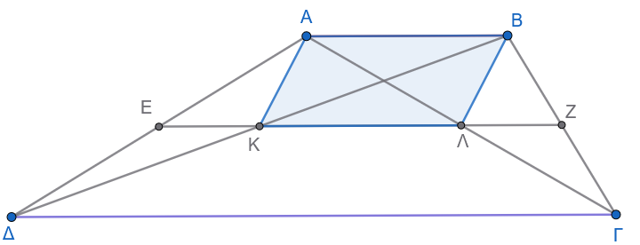
Έστω \(K, \Lambda\) τα σημεία τομής της διαμέσου \(EZ\) με τις διαγώνιους \(B\Delta\) και \(A\Gamma\) αντίστοιχα.
Από το πόρισμα της διαμέσου γνωρίζουμε ότι \(EK =// \dfrac{AB}{2}\) και \(\Lambda Z =// \dfrac{AB}{2}\).
Το μεσαίο τμήμα \(K\Lambda\) ισούται με την ημιδιαφορά των βάσεων: \[K\Lambda = \dfrac{\Gamma\Delta- AB}{2} = \dfrac{3AB - AB}{2} = \dfrac{2AB}{2} = //AB\quad\]
Άρα το \(ΑΚΛΒ\) είναι παραλληλόγραμμο.
Επίσης, \(EK = \dfrac{AB}{2}\), \(\Lambda Z = \dfrac{AB}{2}\) και \(K\Lambda = AB\), οπότε τα τμήματα της διαμέσου \(EK, K\Lambda, \Lambda Z\) είναι ανάλογα με \(1, 2, 1\).
1.2 Ισοσκελές Τραπέζιο
1.2.1 Ορισμός
Ισοσκελές τραπέζιο
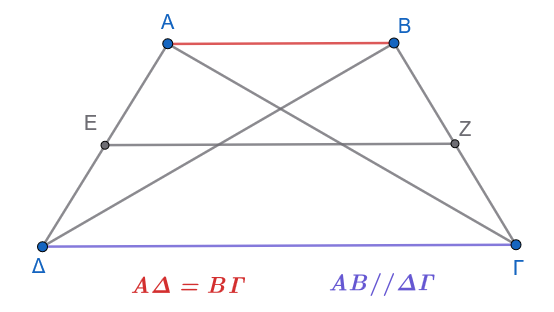
Ισοσκελές τραπέζιο λέγεται το τραπέζιο του οποίου οι μη παράλληλες πλευρές είναι ίσες (\(A\Delta = B\Gamma\)).
1.2.2 Ιδιότητες Ισοσκελούς Τραπεζίου & Αποδείξεις
Ιδιότητα 1:
Σε κάθε ισοσκελές τραπέζιο, οι γωνίες που πρόσκεινται σε μία βάση είναι ίσες (\(\widehat{A} = \widehat{B}\) και \(\widehat{\Gamma} = \widehat{\Delta}\)).
Απόδειξη:
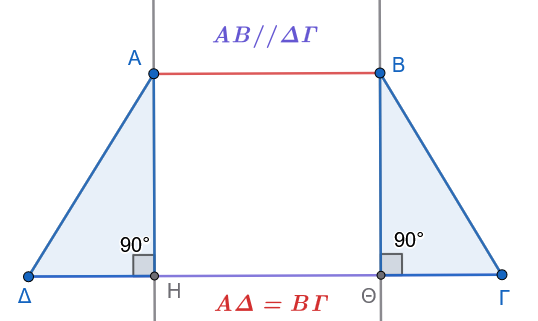
Έστω ισοσκελές τραπέζιο \(AB\Gamma\Delta\) (\(AB \parallel \Gamma\Delta\) και \(A\Delta = B\Gamma\)).
Φέρουμε τα ύψη \(AH\) και \(BK\) προς τη βάση \(\Gamma\Delta\) (\(H, K\) σημεία της \(\Gamma\Delta\)).
Συγκρίνουμε τα ορθογώνια τρίγωνα \(A\Delta H\) (\(\widehat{H}=90^\circ\)) και \(BΘ\Gamma\) (\(\widehat{Θ}=90^\circ\)):
\(A\Delta = B\Gamma\) (από τον ορισμό του ισοσκελούς τραπεζίου).
\(AH = BΘ = \upsilon\) (ως αποστάσεις μεταξύ των παραλλήλων ευθειών \(AB\) και \(\Gamma\Delta\)).
Κατά το κριτήριο ισότητας ορθογώνιων τριγώνων (υποτείνουσα και μία κάθετη πλευρά ίσες), τα τρίγωνα \(A\Delta H\) και \(BK\Gamma\) είναι ίσα.
Συνεπώς, οι αντίστοιχες οξείες γωνίες τους είναι ίσες, δηλαδή:
\[\widehat{\Delta} = \widehat{\Gamma}\quad\]
Επειδή \(AB \parallel \Gamma\Delta\), οι γωνίες \(\widehat{A}\) και \(\widehat{\Delta}\) είναι εντός και επί τα αυτά μέρη, οπότε είναι παραπληρωματικές (\(\widehat{A} + \widehat{\Delta} = 180^\circ \Rightarrow \widehat{A} = 180^\circ - \widehat{\Delta}\)).
Όμοια, \(\widehat{B} + \widehat{\Gamma} = 180^\circ \Rightarrow \widehat{B} = 180^\circ - \widehat{\Gamma}\).
Εφόσον \(\widehat{\Delta} = \widehat{\Gamma}\), προκύπτει ότι: \[\widehat{A} = \widehat{B}\quad\]
Ιδιότητα 2:
Οι διαγώνιοι του ισοσκελούς τραπεζίου είναι ίσες (\(A\Gamma = B\Delta\)).
Απόδειξη:
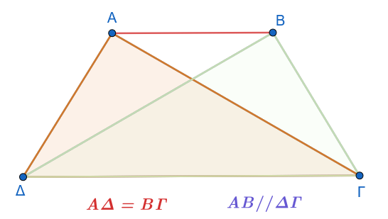
Έστω ισοσκελές τραπέζιο \(AB\Gamma\Delta\) (\(AB \parallel \Gamma\Delta\) και \(A\Delta = B\Gamma\)).
Φέρουμε τις διαγωνίους \(A\Gamma\) και \(B\Delta\).
Συγκρίνουμε τα τρίγωνα \(A\Delta\Gamma\) και \(B\Delta\Gamma\):
\(A\Delta = B\Gamma\) (από υπόθεση).
Η πλευρά \(\Gamma\Delta\) είναι κοινή.
\(A\widehat{\Delta}\Gamma = B\widehat{\Gamma}\Delta\) (από την Ιδιότητα 1, ως γωνίες που πρόσκεινται στη βάση \(\Gamma\Delta\)).
Σύμφωνα με το κριτήριο Πλευρά - Γωνία - Πλευρά (Π-Γ-Π), τα τρίγωνα \(A\Delta\Gamma\) και \(B\Delta\Gamma\) είναι ίσα.
Επομένως, οι απέναντι πλευρές τους \(A\Gamma\) και \(B\Delta\) είναι ίσες: \[A\Gamma = B\Delta\quad\]
1.2.3 Κριτήρια για να είναι ένα Τραπέζιο Ισοσκελές
Ένα τραπέζιο είναι ισοσκελές αν και μόνο αν ικανοποιεί μία από τις παρακάτω ικανές και αναγκαίες συνθήκες:
Κριτήριο 1
Οι γωνίες που πρόσκεινται σε μία βάση του είναι ίσες.
Απόδειξη:
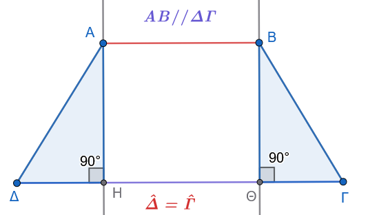
Έστω τραπέζιο \(AB\Gamma\Delta\) (\(AB \parallel \Gamma\Delta\)) με \(\widehat{\Delta} = \widehat{\Gamma}\). Φέρουμε τα ύψη \(AH\) και \(BΘ\) στη \(\Gamma\Delta\).
Τα ορθογώνια τρίγωνα \(A\Delta H\) και \(BΘ\Gamma\) έχουν \(AH = BΘ = \upsilon\) και \(\widehat{\Delta} = \widehat{\Gamma}\).
Από το κριτήριο ισότητας ορθογώνιων τριγώνων (κάθετη πλευρά και οξεία γωνία ίσες), τα τρίγωνα είναι ίσα, οπότε \(A\Delta = B\Gamma\).
Άρα το τραπέζιο είναι ισοσκελές.
Κριτήριο 2
Οι διαγώνιοί του είναι ίσες.
Απόδειξη:
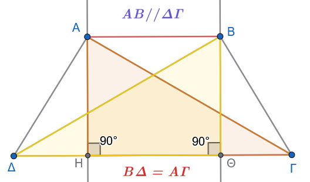
Έστω τραπέζιο \(AB\Gamma\Delta\) (\(AB \parallel \Gamma\Delta\)) με \(A\Gamma = B\Delta\).
Φέρουμε τα ύψη \(AH\) και \(BΘ\) στη \(\Gamma\Delta\).
Τα ορθογώνια τρίγωνα \(A\Gamma H\) και \(B\Delta Θ\) είναι ίσα διότι έχουν \(AH = BΘ = \upsilon\) και \(A\Gamma = B\Delta\) (υποτείνουσες).
Άρα \(A\widehat{\Gamma}H = B\widehat{\Delta}Θ\).
Επίσης, τα τρίγωνα \(A\Delta\Gamma\) και \(B\Delta\Gamma\) έχουν \(A\Gamma = B\Delta\), \(\Gamma\Delta\) κοινή και περιεχόμενες γωνίες ίσες, άρα είναι ίσα (Π-Γ-Π).
Προκύπτει έτσι \(A\Delta = B\Gamma\), οπότε το τραπέζιο είναι ισοσκελές.
1.2.4 Εφαρμογές
Εφαρμογή 1η:
Να αποδειχθεί ότι σε κάθε ισοσκελές τραπέζιο \(AB\Gamma\Delta\) (\(AB \parallel \Gamma\Delta\)), αν προεκταθούν οι μη παράλληλες πλευρές του \(A\Delta\) και \(B\Gamma\), τέμνονται σε ένα σημείο \(O\) σχηματίζοντας δύο ισοσκελή τρίγωνα \(OAB\) και \(O\Delta\Gamma\) με κοινή κορυφή.
Λύση:
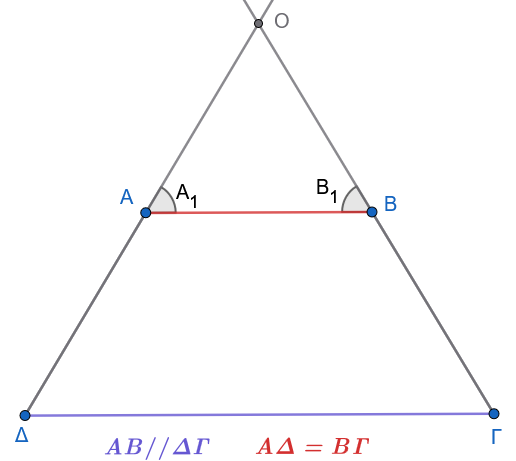
Έστω \(O\) το σημείο τομής των ευθειών \(A\Delta\) και \(B\Gamma\).
Επειδή \(AB \parallel \Gamma\Delta\), οι εντός εκτός και επί τα αυτά μέρη γωνίες είναι ίσες: \(\widehat{A}_1 = \widehat{\Delta}\) και \(\widehat{B}_1 = \widehat{\Gamma}\).
Επειδή το τραπέζιο είναι ισοσκελές, ισχύει \(\widehat{\Delta} = \widehat{\Gamma}\), οπότε και \(\widehat{A}_1 = \widehat{B}_1\).
Άρα:
Στο τρίγωνο \(OAB\), επειδή \(\widehat{A}_1 = \widehat{B}_1\), είναι ισοσκελές με \(OA = OB\).
Στο τρίγωνο \(O\Delta\Gamma\), επειδή \(\widehat{\Delta} = \widehat{\Gamma}\), είναι ισοσκελές με \(O\Delta = O\Gamma\).
Εφαρμογή 2η:
Να αποδειχθεί ότι η ευθεία που διέρχεται από τα μέσα των βάσεων ισοσκελούς τραπεζίου είναι μεσοκάθετος και των δύο βάσεων (και αποτελεί άξονα συμμετρίας του τραπεζίου).
Λύση:
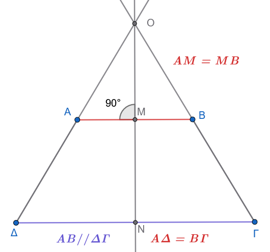
Έστω \(M\) το μέσο της βάσης \(AB\) και \(N\) το μέσο της βάσης \(\Gamma\Delta\).
Από την Εφαρμογή 1, το σημείο \(O\) ισαπέχει από τα άκρα της \(AB\) (\(OA = OB\)), άρα η μεσοκάθετος \(\epsilon\) της \(AB\) διέρχεται από το \(O\) και το μέσο της \(M\).
Επειδή \(AB \parallel \Gamma\Delta\), η ευθεία \(\epsilon\) είναι κάθετη και στη \(\Gamma\Delta\).
Καθώς η \(\epsilon\) είναι το ύψος από την κορυφή \(O\) του ισοσκελούς τριγώνου \(O\Delta\Gamma\), είναι και διάμεσος της βάσης \(\Gamma\Delta\), άρα διέρχεται από το μέσο της \(N\).
Επομένως, η ευθεία \(MN\) είναι η κοινή μεσοκάθετος των δύο βάσεων.
1.3 Ασκήσεις για τα Τραπέζια
1. Αν \(Ε\) και \(Ζ\) είναι τα μέσα των ίσων πλευρών \(AB\) και \(A\Gamma\) αντίστοιχα ισοσκελούς τριγώνου \(AB\Gamma\) (\(AB = A\Gamma\)), να αποδειχθεί ότι το τετράπλευρο \(ΕΖΓB\) είναι ισοσκελές τραπέζιο.
2. Οι διαγώνιοι ισοσκελούς τραπεζίου \(AB\Gamma\Delta\) (\(AB \parallel \Gamma\Delta\)) τέμνονται στο \(O\). Αν \(E, Z, H, \Theta\) είναι τα μέσα των \(OA, OB, O\Gamma, O\Delta\) αντίστοιχα, να αποδειχθεί ότι το τετράπλευρο \(EZH\Theta\) είναι ισοσκελές τραπέζιο.
3. Δίνεται παραλληλόγραμμο \(AB\Gamma\Delta\) και το ύψος του \(AE\). Αν \(K, \Lambda\) είναι τα μέσα των πλευρών \(A\Delta\) και \(B\Gamma\) αντίστοιχα, να αποδειχθεί ότι το τετράπλευρο \(K\Lambda\Gamma E\) είναι ισοσκελές τραπέζιο.
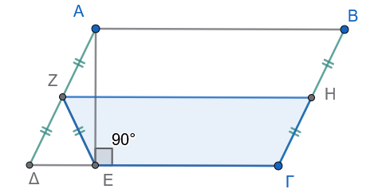
Υπόδειξη
Από το ορθογώνιο τρίγωνο \(ΑΔΕ\) έχουμε \(ΖΔ=ΖΑ=ΖΕ\) (γιατί;)
Από το παραλληλόγραμμο \(ΔΖΗΓ\) (γιατί;) θα έχουμε \(............. = ΖΕ=ΓΗ\) (γιατί;)
4. Δίνεται ισοσκελές τραπέζιο \(AB\Gamma\Delta\) (\(AB \parallel \Gamma\Delta\)) με \(AB < \Gamma\Delta\) και τα ύψη του \(AE\) και \(BZ\). Να αποδείξετε ότι:
\[\Delta E = \Gamma Z = \dfrac{\Gamma\Delta - AB}{2} \quad\]
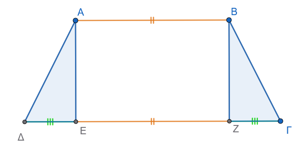
Υπόδειξη
Τα ορθογώνια τρίγωνα είναι ίσα (γιατί;)
Το \(ΑΒΖΕ\) είναι ορθογώνιο (γιατί;). Άρα \(ΔΕ+ΖΓ= ....................\) ή \(2ΔΕ= ...................\)
5. Από την κορυφή \(A\) τριγώνου \(AB\Gamma\) φέρουμε ευθεία \(\epsilon\) που δεν τέμνει το τρίγωνο και έστω \(BB'\) και \(\Gamma\Gamma'\) οι αποστάσεις των κορυφών \(B\) και \(\Gamma\) από την \(\epsilon\). Αν \(M\) είναι το μέσο του \(B'\Gamma'\) και \(K\) το μέσο της διαμέσου \(A\Delta\), να αποδείξετε ότι:
\[MK = \dfrac{A\Delta}{2}\quad\]
\[ΜΔ=\frac{BB'+ΓΓ'}{2}\]
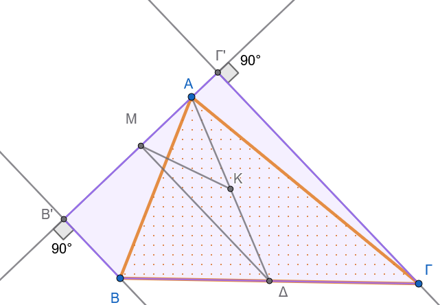
Υπόδειξη
Στο ορθογώνιο (γιατί;) τρίγωνο ΑΜΔ το Κ είναι μέσον της υποτείνουσας ………
Άρα \(ΜΚ=.........\)
Στο τραπέζιο (γιατί;) \(ΒΒ'Γ'Γ\) το Δ είναι μέσον της ΒΓ και το Μ ………………………….
6. Σε τραπέζιο \(AB\Gamma\Delta\) (\(AB \parallel \Gamma\Delta\)) η διχοτόμος της γωνίας \(\widehat{B}\) τέμνει τη διάμεσό του \(EZ\) στο σημείο \(H\). Να αποδείξετε ότι \(B\widehat{H}\Gamma = 90^\circ\).
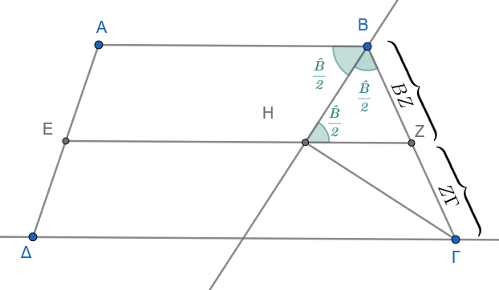
Υπόδειξη
Το τρίγωνο \(ΒΗΖ\) είναι ισοσκελές (γιατί;) και \(ΒΖ=ΖΓ\). Άρα …………………
7. Σε ισοσκελές τρίγωνο \(AB\Gamma\) (\(AB = A\Gamma\)), \(M\) είναι το μέσο της \(AB\). Αν η μεσοκάθετος της \(AB\) τέμνει την \(A\Gamma\) στο \(Z\) και η παράλληλη από το \(Z\) προς τη \(B\Gamma\) τέμνει την \(AB\) στο \(H\), να αποδείξετε ότι \(\Gamma H = AZ\).
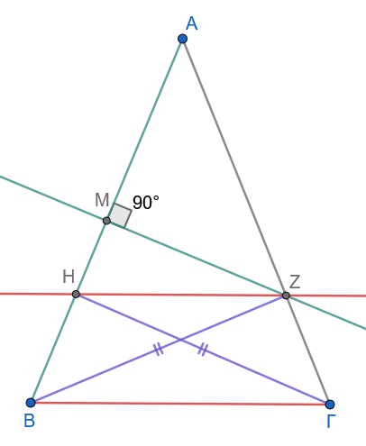
Υπόδειξη
Το \(ΗΒΓΖ\) είναι ισοσκελές (γιατί;) τραπέζιο με διαγώνιους ΒΖ και ΗΓ.
Το Ζ είναι σημείο της μεσοκαθέτου ΜΖ στην ΑΒ.
……………….
…………………..
8. Δίνεται τραπέζιο \(AB\Gamma\Delta\) με \(\widehat{A} = \widehat{\Delta} = 90^\circ\) (ορθογώνιο τραπέζιο) και \(\widehat{B} = 120^\circ\). Αν \(AB = 2\alpha\) και \(B\Gamma = \alpha\), να υπολογιστεί το μήκος της διαμέσου \(EZ\) ως συνάρτηση του \(\alpha\).
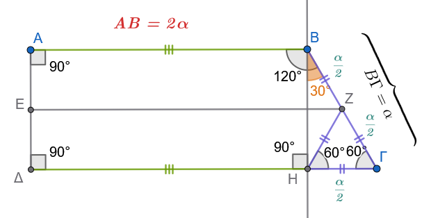
Υπόδειξη
Το \(ΑΒΗΔ\) είναι ορθογώνιο (γιατί;)
Αν \(Θ=ΕΖ\cap ΒΗ\), τότε \(ΕΘ=2α\) (γιατί;) και \(ΘΖ=\dfrac{α}{4}\) (γιατί;)
Άρα \(ΕΖ=.................\)
9. Σε ένα τραπέζιο \(AB\Gamma\Delta\), η μία από τις μη παράλληλες πλευρές του \(A\Delta\) είναι ίση με το άθροισμα των βάσεων (\(A\Delta = AB + \Gamma\Delta\)). Αν \(M\) είναι το μέσο της πλευράς \(B\Gamma\), να αποδείξετε ότι \(A\widehat{M}\Delta = 90^\circ\).
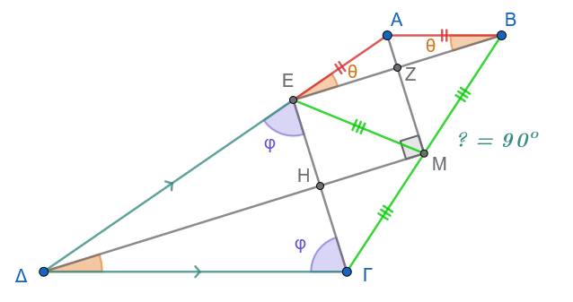
Υπόδειξη
Παίρνουμε \(ΑΕ=ΑΒ \implies ΔΕ=ΔΓ\), άρα \(\overset{\triangle} {ΑΕΒ} \text{ και } \overset{\triangle} {ΓΔΕ}\) είναι ισοσκελή.
Έτσι \(\hat θ = 90^ο-\dfrac{\hat A}{2}\) και \(\hat φ = 90^ο-\dfrac{\hat Δ}{2}\)
Άρα \(\hat φ +\hat θ= ...................90^ο\) και επομένως \(\widehat{ΓEB}=90^ο\)
Στο τρίγωνο \(ΓΕΒ\) το Μ είναι μέσον της υποτείνουσας ΒΓ, άρα ………………………………
έτσι η ΑΜ είναι μεσοκάθετος της ΕΒ και η ΔΜ είναι μεσοκάθετος της ΕΓ (εξηγήστε γιατί).
Τότε το \(ΕΖΜΗ\) θα είναι ………………………………….
10. Από το μέσο \(E\) της πλευράς \(B\Gamma\) ισοσκελούς τραπεζίου \(AB\Gamma\Delta\) (\(AB \parallel \Gamma\Delta\)) φέρουμε παράλληλη ευθεία προς την \(A\Delta\), η οποία τέμνει τη βάση \(\Delta\Gamma\) στο \(M\). Να αποδείξετε ότι \(BM \perp \Delta\Gamma\).
Υπόδειξη
Σχεδιάστε το σχήμα
Δείτε ότι \(\widehat{AΔΓ} \overset{γιατί;}{=}\widehat{ΕΜΓ} \overset{γιατί;}{=} \widehat{EΓΜ}\)
Άρα στο τρίγωνο ΒΜΓ έχουμε \(ΜΕ\overset{γιατί;}{=}ΕΓ \overset{γιατί;}{=} ΕΒ\)
Επομένως …………………………….
11. Δίνεται τρίγωνο \(AB\Gamma\) και το ύψος του \(AH\). Αν \(\Delta, E, Z\) είναι τα μέσα των \(AB, A\Gamma, B\Gamma\) αντίστοιχα, να αποδείξετε ότι το τετράπλευρο \(\Delta EZ H\) είναι ισοσκελές τραπέζιο.
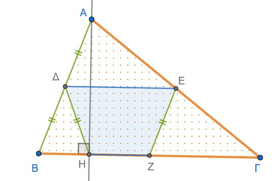
Υπόδειξη
Στο ορθογώνιο τρίγωνο ΑΗΒ το Δ είναι μέσο της ΑΒ.
Στο τρίγωνο ΑΒΓ το ΕΖ ενώνει τα μέσα των πλευρών ……………………………………….
……………………………………………………………………..
12. Αν σε ένα τραπέζιο η μία βάση είναι διπλάσια της άλλης (\(\Gamma\Delta = 2AB\)), να αποδείξετε ότι οι διαγώνιοι χωρίζουν τη διάμεσο σε τρία ίσα τμήματα.
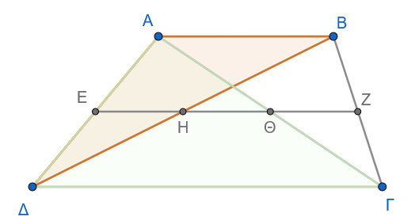
Υπόδειξη
Εργαστείτε στα χρωματισμένα τρίγωνα.
Τα Ε, Η και Θ είναι μέσα των πλευρών …………….
Υπολογίστε το ΕΗ, το ΕΘ και αφαιρέστε για να βρείτε το ΗΘ ………………………………………
…………………………………………………………
13. Δίνεται τραπέζιο \(AB\Gamma\Delta\) (\(AB \parallel \Gamma\Delta\)) με \(\Gamma\Delta = \dfrac{3}{2}AB\). Αν \(E, Z, H\) είναι τα μέσα των \(AB, B\Gamma, \Delta E\) αντίστοιχα, να αποδείξετε ότι το τετράπλευρο \(ABZH\) είναι παραλληλόγραμμο.
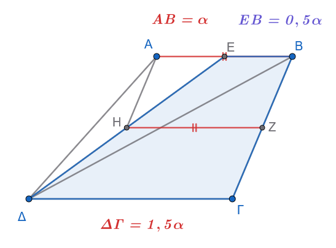
Υπόδειξη
Στο τραπέζιο ΕΒΓΔ υπολογίστε την διάμεσο ΗΖ και συγκρίνετε την με την ΑΒ
14. Αν \(A', B', \Gamma', \Delta', K'\) είναι οι προβολές των κορυφών \(A, B, \Gamma, \Delta\) και του κέντρου \(K\) παραλληλογράμμου \(AB\Gamma\Delta\) σε ευθεία \(\epsilon\) που αφήνει όλες τις κορυφές προς το ίδιο μέρος της κορυφής Α, να αποδείξετε ότι \(AA' + BB' + \Gamma\Gamma' + \Delta\Delta' = 4KK'\).
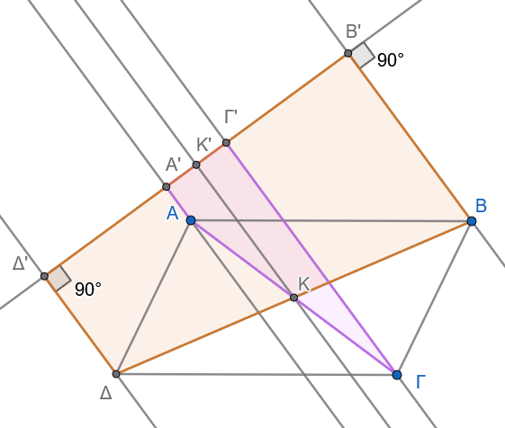
Υπόδειξη
Εργαστείτε στα τραπέζια (γιατί είναι τραπέζια;) Α’ΑΓΓ’ και Δ’ΔΒΒ’
Η ΚΚ’ είναι …………………………………….
…………………………………………………
15. Σε τραπέζιο \(AB\Gamma\Delta\) (\(AB \parallel \Gamma\Delta\)) ισχύει \(A\Delta = AB + \Gamma\Delta\). Να αποδείξετε ότι οι διχοτόμοι των γωνιών \(\widehat{A}\) και \(\widehat{\Delta}\) τέμνονται πάνω στη μη παράλληλη πλευρά \(B\Gamma\).
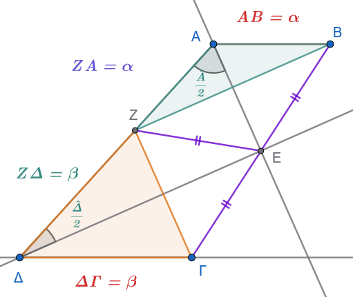
Υπόδειξη
Παίρνουμε \(ΑΖ=ΑΒ\) και άρα \(ΖΔ=ΔΓ\)
Τότε τα χρωματισμένα τρίγωνα είναι ισοσκελή και αφού ή ΑΕ και ΔΕ είναι διχοτόμοι , είναι και μεσοκάθετοι των ΖΒ και ΖΓ
Αρκεί να αποδείξετε ότι η \(\widehat{ΒΖΓ}=90^o\)
Υπολογίστε τις \(\widehat{ΑΖΒ}\) και \(\widehat{ΔΖΓ}\) …………………………………….. \(\widehat{ΑΖΒ}+\widehat{ΔΖΓ}=90^o\) αφού \(\hat Α+ \hat Δ=180^o\) (γιατί;)
Άρα ……………………………………
- Εκφώνηση
Δίνεται τραπέζιο \(AB\Gamma\Delta\) με \(\widehat{A} = \widehat{\Delta} = 90^\circ\) και \(B\Gamma = 2\Gamma\Delta\).
Αν \(M\) είναι το μέσο της \(B\Gamma\), να αποδείξετε ότι \(A\widehat{M}\Gamma = 3 M\widehat{A}B\).
Λύση
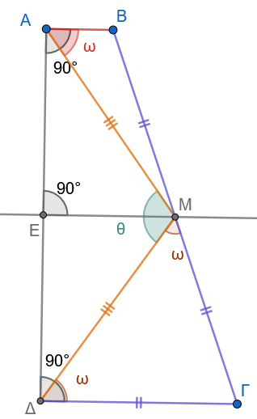
Ίσες πλευρές:
Επειδή το \(M\) είναι το μέσο του \(B\Gamma\) και δίνεται ότι \(B\Gamma = 2\Gamma\Delta\), έχουμε: \[\Gamma M = \frac{B\Gamma}{2} = \Gamma\Delta\]
Άρα, το τρίγωνο \(\Gamma\Delta M\) είναι ισοσκελές με \(\Gamma\Delta = \Gamma M\).
Μεσοκάθετος του \(A\Delta\):
Αν \(E\) είναι το μέσο του \(A\Delta\), τότε το τμήμα \(ME\) ενώνει τα μέσα των μη παράλληλων πλευρών του τραπεζίου, άρα είναι η διάμεσος του τραπεζίου: \[ME \parallel AB \parallel \Gamma\Delta\]
Επειδή \(A\Delta \perp AB\), είναι και \(ME \perp A\Delta\).
Άρα, το \(ME\) είναι μεσοκάθετος του τμήματος \(A\Delta\), γεγονός που σημαίνει ότι: \[MA = M\Delta\]
Επομένως, το τρίγωνο \(AM\Delta\) είναι ισοσκελές.
Υπολογισμός των Γωνιών:
Έστω \(\widehat{MAB} = \omega\).
Επειδή \(\widehat{A} = 90^\circ\), έχουμε: \[\widehat{MA\Delta} = 90^\circ - \omega\]
Επειδή το τρίγωνο \(AM\Delta\) είναι ισοσκελές (\(MA = M\Delta\)): \[\widehat{M\Delta A} = \widehat{MA\Delta} = 90^\circ - \omega\]
Η γωνία \(\widehat{AM\Delta}\) στην κορυφή του ισοσκελούς τριγώνου \(AM\Delta\) είναι: \[\widehat{AM\Delta} = 180^\circ - (\widehat{MA\Delta} + \widehat{M\Delta A}) = 180^\circ - 2(90^\circ - \omega) = 2\omega\]
Επειδή \(\widehat{\Delta} = 90^\circ\), η γωνία \(\widehat{\Gamma\Delta M}\) είναι: \[\widehat{\Gamma\Delta M} = 90^\circ - \widehat{M\Delta A} = 90^\circ - (90^\circ - \omega) = \omega\]
Επειδή το τρίγωνο \(\Gamma\Delta M\) είναι ισοσκελές (\(\Gamma\Delta = \Gamma M\)), οι προσκείμενες στη βάση γωνίες είναι ίσες: \[\widehat{\Gamma M\Delta} = \widehat{\Gamma\Delta M} = \omega\]
Συμπέρασμα:
Η γωνία \(\widehat{AM\Gamma}\) προκύπτει από το άθροισμα των γωνιών \(\widehat{AM\Delta}\) και \(\widehat{\Gamma M\Delta}\): \[\widehat{AM\Gamma} = \widehat{AM\Delta} + \widehat{\Gamma M\Delta} = 2\omega + \omega = 3\omega\]
Επομένως: \[\widehat{AM\Gamma} = 3\widehat{MAB}\]
17. Σε τραπέζιο \(AB\Gamma\Delta\) (\(AB \parallel \Gamma\Delta\)) με \(AB < \Gamma\Delta\), έστω \(M\) το μέσο της \(B\Gamma\). Αν \(\Delta M = \Delta\Gamma\) και η παράλληλη από το \(A\) προς τη \(B\Gamma\) τέμνει τη \(\Delta M\) στο \(E\), να αποδείξετε ότι \(AM = BE\).
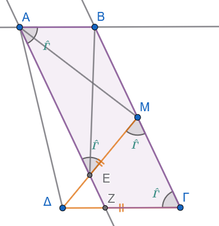
Υπόδειξη
Δείτε ότι (και εξηγείστε):
ΑΒΓΖ παραλληλόγραμμο.
ΖΕΜΓ ισοσκελές τραπέζιο.
ΒΜΕΑ ισοσκελές τραπέζιο.
18. Σε κάθε ισοσκελές τραπέζιο \(AB\Gamma\Delta\), αν οι διαγώνιοι \(A\Gamma\) και \(B\Delta\) τέμνονται στο \(O\), να αποδειχθεί ότι τα τρίγωνα \(OAB\) και \(O\Delta\Gamma\) που σχηματίζονται με τις βάσεις είναι ισοσκελή.
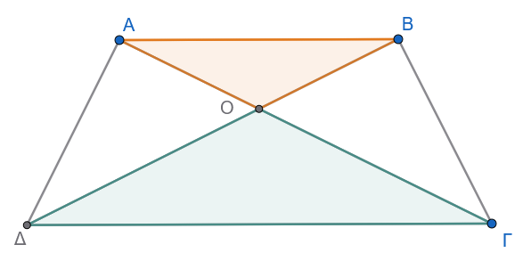
- Εκφώνηση:
Τα μέσα των πλευρών ενός ισοσκελούς τραπεζίου είναι κορυφές ρόμβου.
Λύση:
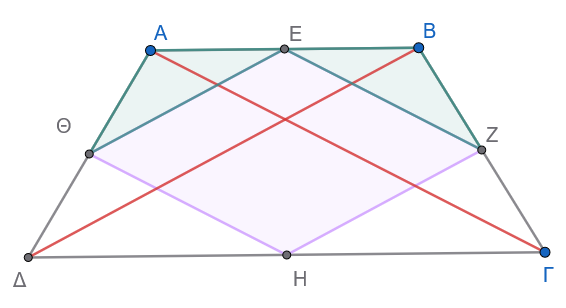
Για να αποδείξουμε ότι το τετράπλευρο \(EZH\Theta\) είναι ρόμβος, αρκεί να δείξουμε ότι:
Είναι παραλληλόγραμμο, και
Έχει δύο διαδοχικές πλευρές ίσες.
1ο Βήμα: Απόδειξη ότι το \(EZH\Theta\) είναι παραλληλόγραμμο
Στο τρίγωνο \(A\Delta\Gamma\):
Το ευθύγραμμο τμήμα \(\Theta H\) ενώνει τα μέσα των πλευρών \(A\Delta\) και \(\Delta\Gamma\).
Επομένως, είναι παράλληλο προς τη διαγώνιο \(A\Gamma\) και ίσο με το μισό της: \[\Theta H \parallel A\Gamma \quad \text{και} \quad \Theta H = \frac{A\Gamma}{2} \quad (1)\]
Στο τρίγωνο \(AB\Gamma\):
Το ευθύγραμμο τμήμα \(EZ\) ενώνει τα μέσα των πλευρών \(AB\) και \(B\Gamma\).
Επομένως, είναι επίσης παράλληλο προς τη διαγώνιο \(A\Gamma\) και ίσο με το μισό της: \[EZ \parallel A\Gamma \quad \text{και} \quad EZ = \frac{A\Gamma}{2} \quad (2)\]
Από τις σχέσεις \((1)\) και \((2)\) προκύπτει ότι: \[\Theta H \parallel EZ \quad \text{και} \quad \Theta H = EZ\]
Επειδή το τετράπλευρο \(EZH\Theta\) έχει δύο απέναντι πλευρές παράλληλες και ίσες, είναι παραλληλόγραμμο.
2ο Βήμα: Απόδειξη ότι έχει ίσες πλευρές
Συγκρίνουμε τα τρίγωνα \(\Theta AE\) και \(EZB\). Αυτά έχουν:
\(AE = EB\), επειδή το \(E\) είναι το μέσο της βάσης \(AB\).
\(A\Theta = BZ\), ως τα μισά των ίσων μη παράλληλων πλευρών \(A\Delta\) και \(B\Gamma\) του ισοσκελούς τραπεζίου (\(A\Delta = B\Gamma\)).
\(\widehat{A} = \widehat{B}\), ως γωνίες που πρόσκεινται στη βάση του ισοσκελούς τραπεζίου.
Σύμφωνα με το κριτήριο ισότητας τριγώνων Πλευρά – Γωνία – Πλευρά (\(\Pi-\Gamma-\Pi\)), τα τρίγωνα \(\Theta AE\) και \(EZB\) είναι ίσα.
Άρα και οι αντίστοιχες πλευρές τους είναι ίσες: \[\Theta E = EZ\]
Συμπέρασμα:
Το παραλληλόγραμμο \(EZH\Theta\) έχει δύο διαδοχικές πλευρές ίσες (\(\Theta E = EZ\)), άρα όλες οι πλευρές του είναι ίσες: \[\Theta E = EZ = ZH = H\Theta\]
Επομένως, το τετράπλευρο \(EZH\Theta\) είναι ρόμβος.
- Εκφώνηση:
Το άθροισμα των αποστάσεων των κορυφών ενός τριγώνου \(AB\Gamma\) από μια εξωτερική του ευθεία \((\varepsilon)\), ισούται με το άθροισμα των αποστάσεων των μέσων των πλευρών του από την ίδια ευθεία.
Λύση:
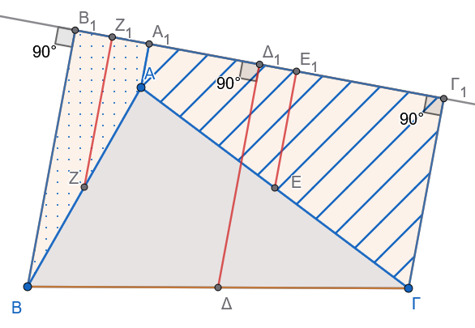
Έστω \(\Delta, E, Z\) τα μέσα των πλευρών \(B\Gamma, A\Gamma, AB\) αντίστοιχα.
Φέρνουμε τις αποστάσεις (κάθετα τμήματα) των κορυφών και των μέσων προς την ευθεία \((\varepsilon)\):
\(AA_1, BB_1, \Gamma\Gamma_1 \perp (\varepsilon)\) (αποστάσεις των κορυφών)
\(\Delta\Delta_1, EE_1, ZZ_1 \perp (\varepsilon)\) (αποστάσεις των μέσων)
Όλα τα παραπάνω τμήματα είναι παράλληλα μεταξύ τους ως κάθετα στην ίδια ευθεία \((\varepsilon)\).
Θα αποδείξουμε ότι: \[AA_1 + BB_1 + \Gamma\Gamma_1 = \Delta\Delta_1 + EE_1 + ZZ_1\]
εφαρμόζοντας την ιδιότητα της διαμέσου του τραπεζίου (η διάμεσος ισούται με το ημιάθροισμα των βάσεων) τρεις φορές:
Στο τραπέζιο \(BB_1\Gamma_1\Gamma\):
Το τμήμα \(\Delta\Delta_1\) ενώνει τα μέσα των μη παράλληλων πλευρών, άρα είναι η διάμεσος του τραπεζίου: \[\Delta\Delta_1 = \frac{BB_1 + \Gamma\Gamma_1}{2} \implies BB_1 + \Gamma\Gamma_1 = 2 \cdot \Delta\Delta_1 \quad (1)\]
Στο τραπέζιο \(BB_1A_1A\):
Το τμήμα \(ZZ_1\) είναι η διάμεσος του τραπεζίου: \[ZZ_1 = \frac{BB_1 + AA_1}{2} \implies BB_1 + AA_1 = 2 \cdot ZZ_1 \quad (2)\]
Στο τραπέζιο \(AA_1\Gamma_1\Gamma\):
Το τμήμα \(EE_1\) είναι η διάμεσος του τραπεζίου: \[EE_1 = \frac{AA_1 + \Gamma\Gamma_1}{2} \implies AA_1 + \Gamma\Gamma_1 = 2 \cdot EE_1 \quad (3)\]
Συμπέρασμα:
Προσθέτουμε τις σχέσεις \((1)\), \((2)\) και \((3)\) κατά μέλη:
\[(BB_1 + \Gamma\Gamma_1) + (BB_1 + AA_1) + (AA_1 + \Gamma\Gamma_1) = 2 \cdot \Delta\Delta_1 + 2 \cdot ZZ_1 + 2 \cdot EE_1\]
\[2 \cdot AA_1 + 2 \cdot BB_1 + 2 \cdot \Gamma\Gamma_1 = 2 \cdot (\Delta\Delta_1 + EE_1 + ZZ_1)\]
\[2 \cdot (AA_1 + BB_1 + \Gamma\Gamma_1) = 2 \cdot (\Delta\Delta_1 + EE_1 + ZZ_1)\]
Διαιρώντας και τα δύο μέλη με το \(2\), προκύπτει:
\[AA_1 + BB_1 + \Gamma\Gamma_1 = \Delta\Delta_1 + EE_1 + ZZ_1\]
- Εκφώνηση:
Δίνεται ισόπλευρο τρίγωνο \(AB\Gamma\) και ένα εσωτερικό του σημείο \(O\).
Από το σημείο \(O\) φέρνουμε:
την ημιευθεία \(Ox \parallel B\Gamma\), η οποία τέμνει την \(A\Gamma\) στο σημείο \(\Delta\),
την ημιευθεία \(Oy \parallel A\Gamma\), η οποία τέμνει την \(AB\) στο σημείο \(E\), και
την ημιευθεία \(Oz \parallel AB\), η οποία τέμνει την \(B\Gamma\) στο σημείο \(Z\).
Να αποδείξετε ότι το άθροισμα \(O\Delta + OE + OZ\) είναι σταθερό.
Λύση:
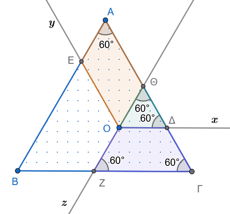
Θα αποδείξουμε ότι: \[O\Delta + OE + OZ = A\Gamma \quad (\sigma\tau\alpha\theta\varepsilon\rho\text{ό})\]
Προεκτείνουμε την ημιευθεία \(ZO\) (προς την πλευρά του \(O\)) μέχρι να τμήσει την πλευρά \(A\Gamma\) στο σημείο \(\Theta\).
1ο Βήμα: Το τετράπλευρο \(O\Theta AE\)
Έχουμε \(OE \parallel A\Theta\) (αφού \(Oy \parallel A\Gamma\)) και \(\Theta O \parallel AE\) (αφού \(Oz \parallel AB\)).
Επομένως, το \(O\Theta AE\) έχει τις απέναντι πλευρές του παράλληλες, άρα είναι παραλληλόγραμμο.
Από τις ιδιότητες του παραλληλογράμμου προκύπτει ότι οι απέναντι πλευρές είναι ίσες: \[OE = A\Theta \quad (1)\]
2ο Βήμα: Το τρίγωνο \(\Theta O\Delta\)
Επειδή \(O\Delta \parallel B\Gamma\), οι εντός εκτός και επί τα αυτά μέρη γωνίες είναι ίσες:
\[\widehat{\Delta}_1 = \widehat{\Gamma} = 60^\circ\]Επειδή \(\Theta O \parallel AB\), αντίστοιχα έχουμε:
\[\widehat{\Theta}_1 = \widehat{A} = 60^\circ\]Αφού το τρίγωνο \(\Theta O\Delta\) έχει δύο γωνίες ίσες με \(60^\circ\), είναι ισόπλευρο τρίγωνο.
Επομένως, όλες οι πλευρές του είναι ίσες: \[O\Delta = \Theta\Delta \quad (2)\]
3ο Βήμα: Το τετράπλευρο \(OZ\Gamma\Delta\)
Έχει \(O\Delta \parallel Z\Gamma\), άρα είναι τραπέζιο.
Επειδή \(Oz \parallel AB\), είναι \(\widehat{Z}_1 = \widehat{B} = 60^\circ\).
Καθώς το αρχικό τρίγωνο είναι ισόπλευρο, έχουμε \(\widehat{\Gamma} = 60^\circ\), άρα: \[\widehat{Z}_1 = \widehat{\Gamma} = 60^\circ\]
Επειδή οι γωνίες που πρόσκεινται στη βάση του τραπεζίου είναι ίσες, το τραπέζιο \(OZ\Gamma\Delta\) είναι ισοσκελές, οπότε οι μη παράλληλες πλευρές του είναι ίσες: \[OZ = \Delta\Gamma \quad (3)\]
Συμπέρασμα:
Προσθέτουμε κατά μέλη τις ισότητες \((1)\), \((2)\) και \((3)\): \[OE + O\Delta + OZ = A\Theta + \Theta\Delta + \Delta\Gamma\]
Παρατηρούμε ότι τα διαδοχικά τμήματα \(A\Theta\), \(\Theta\Delta\) και \(\Delta\Gamma\) συνθέτουν ολόκληρη την πλευρά \(A\Gamma\): \[A\Theta + \Theta\Delta + \Delta\Gamma = A\Gamma\]
Άρα: \[O\Delta + OE + OZ = A\Gamma = \sigma\tau\alpha\theta\varepsilon\rho\text{ό} \quad (\mu\text{ή}\kappa\text{o}\varsigma\ \tau\eta\varsigma\ \pi\lambda\varepsilon\upsilon\rho\acute{\alpha}\varsigma\ \tau\text{o}\upsilon\ \iota\sigma\text{o}\pi\lambda\varepsilon\acute{\upsilon}\rho\text{o}\upsilon)\]
- Εκφώνηση:
Πάνω στη βάση \(B\Gamma\) ενός ισοσκελούς τριγώνου \(AB\Gamma\) (\(AB = A\Gamma\)) παίρνουμε ένα τυχαίο σημείο \(\Delta\) και φέρνουμε τις αποστάσεις του \(\Delta E \perp A\Gamma\) και \(\Delta Z \perp AB\) από τις ίσες πλευρές. Αν \(M\) είναι το μέσο της βάσης \(B\Gamma\) και \(MH \perp A\Gamma\), να αποδείξετε ότι: \[AZ + AE = 2 \cdot AH = \sigma\tau\alpha\theta\varepsilon\rho\text{ό}\] για οποιαδήποτε θέση του σημείου \(\Delta\).
Λύση:
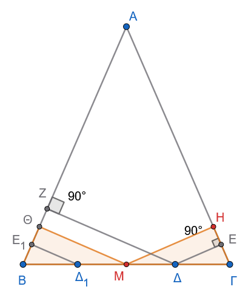
1ο Βήμα: Βοηθητική κατασκευή και ισότητα τμημάτων
Φέρνουμε την κάθετο \(M\Theta \perp AB\).
Συγκρίνουμε τα ορθογώνια τρίγωνα \(MB\Theta\) και \(M\Gamma H\):
\(MB = M\Gamma\) (το \(M\) είναι μέσο της \(B\Gamma\))
\(\widehat{B} = \widehat{\Gamma}\) (γωνίες προσκείμενες στη βάση του ισοσκελούς τριγώνου \(AB\Gamma\))
Άρα τα τρίγωνα είναι ίσα, οπότε: \[B\Theta = \Gamma H \quad \text{και} \quad A\Theta = AH \quad (\alpha\varphi\text{ού } AB = A\Gamma)\]
2ο Βήμα: Αναγωγή της αποδεικτέας σχέσης
Η ζητούμενη σχέση γράφεται ισοδύναμα: \[AZ + AE = 2 \cdot AH\] \[AZ + (AH + HE) = AH + A\Theta\] \[AZ + AH + HE = AH + (AZ + Z\Theta)\] \[HE = Z\Theta\]
Επομένως, αρκεί να αποδείξουμε ότι \(HE = Z\Theta\).
3ο Βήμα: Συμμετρικό σημείο και διάμεσος τραπεζίου
Παίρνουμε το σημείο \(\Delta_1\) πάνω στη βάση \(B\Gamma\), συμμετρικό του \(\Delta\) ως προς το \(M\) (άρα το \(M\) είναι το μέσο του τμήματος \(\Delta_1\Delta\)).
Φέρνουμε την κάθετο \(\Delta_1 E_1 \perp AB\).
Επειδή \(\Delta_1 E_1 \perp AB\), \(M\Theta \perp AB\) και \(\Delta Z \perp AB\), τα τρία αυτά τμήματα είναι παράλληλα μεταξύ τους: \[\Delta_1 E_1 \parallel M\Theta \parallel \Delta Z\]
Στο τραπέζιο \(\Delta_1 E_1 Z \Delta\), το τμήμα \(M\Theta\) άγεται από το μέσο \(M\) της πλευράς \(\Delta_1\Delta\) παράλληλα προς τις βάσεις, άρα είναι η διάμεσος του τραπεζίου.
Επομένως, το \(\Theta\) είναι το μέσο του \(E_1 Z\), δηλαδή: \[E_1\Theta = \Theta Z \quad (1)\]
4ο Βήμα: Ισότητα των τμημάτων \(E_1\Theta\) και \(EH\)
Τα ορθογώνια τρίγωνα \(\Delta_1 B E_1\) και \(\Delta \Gamma E\) είναι ίσα, διότι έχουν:
\(B\Delta_1 = \Gamma\Delta\) (λόγω συμμετρίας ως προς το μέσο \(M\))
\(\widehat{B} = \widehat{\Gamma}\)
Άρα προκύπτει ότι: \[BE_1 = \Gamma E\]
Παρατηρούμε ότι: \[E_1\Theta = B\Theta - BE_1\] \[EH = \Gamma H - \Gamma E\]
Επειδή \(B\Theta = \Gamma H\) και \(BE_1 = \Gamma E\), έχουμε ως διαφορά ίσων τμημάτων: \[E_1\Theta = EH \quad (2)\]
Συμπέρασμα:
Από τις σχέσεις \((1)\) και \((2)\) προκύπτει άμεσα ότι: \[HE = \Theta Z\]
Επομένως, ισχύει η ισοδύναμη αρχική σχέση: \[AZ + AE = 2 \cdot AH = \sigma\tau\alpha\theta\varepsilon\rho\text{ό}\] (καθώς το σημείο \(H\) εξαρτάται μόνο από το μέσο \(M\) και είναι ανεξάρτητο της θέσης του σημείου \(\Delta\)).
1.4 Σύντομη Ανασκόπηση: Αξιοσημείωτες Ευθείες και Κύκλοι Τριγώνου
Σε κάθε τρίγωνο \(AB\Gamma\), οι τέσσερις βασικές κατηγορίες ευθειών (μεσοκάθετοι, διχοτόμοι, διάμεσοι, ύψη) αποτελούν τριάδες συντρεχουσών ευθειών, ορίζοντας αντίστοιχα αξιοσημείωτα σημεία και κύκλους:
ΑΞΙΟΣΗΜΕΙΩΤΑ ΣΗΜΕΙΑ ΚΑΙ ΚΥΚΛΟΙ ΤΡΙΓΩΝΟΥ
|
+------------------------------+------------------------------+
| | |
[Μεσοκάθετοι] [Διχοτόμοι] [Διάμεσοι]
| | |
v +---------------+ v
Περίκεντρο (O) | | Βαρύκεντρο (G)
(Κέντρο Περιγεγραμμένου) v v (2/3 διαμέσου)
[Εσωτερικές] [Εξωτερικές] |
| | v
v v [Ύψη]
Έγκεντρο (I) Παράκεντρα (Iα) |
(Εγγεγραμμένος) (Παρεγγεγραμμένοι) v
Ορθόκεντρο (H)Μεσοκάθετοι Πλευρών — Περίκεντρο & Περιγεγραμμένος Κύκλος:
Οι μεσοκάθετοι των τριών πλευρών του τριγώνου διέρχονται από το ίδιο σημείο \(O\), το οποίο ονομάζεται περίκεντρο.
Το σημείο \(O\) ισαπέχει από τις τρεις κορυφές του τριγώνου (\(OA = OB = O\Gamma = R\)) και αποτελεί το κέντρο του περιγεγραμμένου κύκλου του τριγώνου.
Εσωτερικές Διχοτόμοι — Έγκεντρο & Εγγεγραμμένος Κύκλος:
Οι εσωτερικές διχοτόμοι των τριών γωνιών του τριγώνου τέμνονται σε ένα σημείο \(I\), το οποίο ονομάζεται έγκεντρο.
Το σημείο \(I\) ισαπέχει από τις τρεις πλευρές του τριγώνου και αποτελεί το κέντρο του εγγεγραμμένου κύκλου του τριγώνου.
Εξωτερικές Διχοτόμοι — Παράκεντρα & Παρεγγεγραμμένοι Κύκλοι:
Οι εξωτερικές διχοτόμοι δύο γωνιών και η εσωτερική διχοτόμος της τρίτης γωνίας τέμνονται ανά τρεις σε τρία σημεία \(I_\alpha, I_\beta, I_\gamma\), τα οποία ονομάζονται παράκεντρα.
Τα σημεία αυτά αποτελούν τα κέντρα των τριών παρεγγεγραμμένων κύκλων του τριγώνου, καθένας από τους οποίους εφάπτεται σε μία πλευρά και στις προεκτάσεις των άλλων δύο.
Διάμεσοι — Βαρύκεντρο (Κέντρο Βάρους):
Οι τρεις διάμεσοι του τριγώνου τέμνονται σε ένα σημείο \(G\) (ή \(\Theta\)), το οποίο ονομάζεται βαρύκεντρο.
Το βαρύκεντρο απέχει από κάθε κορυφή απόσταση ίση με τα \(\dfrac{2}{3}\) του μήκους της αντίστοιχης διαμέσου (\(AG = \dfrac{2}{3}\mu_\alpha\)).
Ύψη — Ορθόκεντρο:
- Οι φορείς των τριών υψών του τριγώνου διέρχονται από το ίδιο σημείο \(H\), το οποίο ονομάζεται ορθόκεντρο του τριγώνου.
1.5 Ταξινόμηση τετράπλευρων
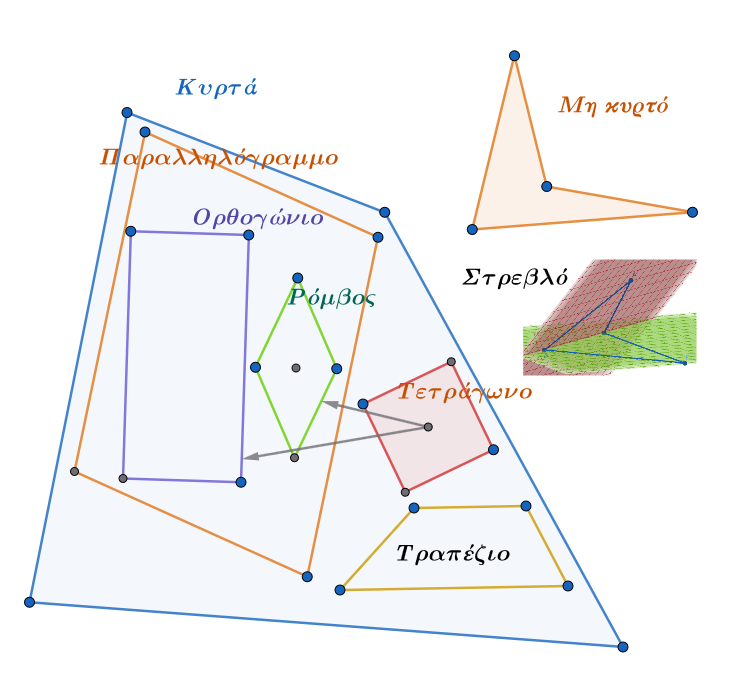
ΚΑΛΗ ΜΕΛΕΤΗ !!!